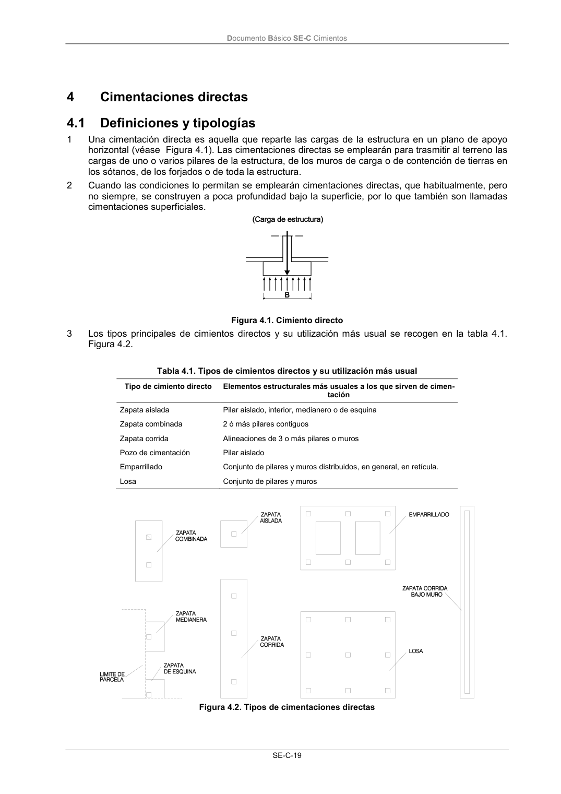

DB-SE-C Cimientos · edición 2019-12-20 · capa oficial
Documento DB-SE-C-oficial · SHA-256 del PDF a71133f4b0dca253e45ea3071c70f2a512354bcc5cd841bf89b1a502f567ac5e
Página física 24 de 165.
Copia fiel del PDF fuente · Fuente oficial
Ficha de la disposición en la fuente oficial
Formato: Texto de la página (Markdown)
Documento Básico SE-C Cimientos SE-C-19 4 Cimentaciones directas 4.1 Definiciones y tipologías 1 Una cimentación directa es aquella que reparte las cargas de la estructura en un plano de apoyo horizontal (véase Figura 4.1). Las cimentaciones directas se emplearán para trasmitir al terreno las cargas de uno o varios pilares de la estructura, de los muros de carga o de contención de tierras en los sótanos, de los forjados o de toda la estructura. 2 Cuando las condiciones lo permitan se emplearán cimentaciones directas, que habitualmente, pero no siempre, se construyen a poca profundidad bajo la superficie, por lo que también son llamadas cimentaciones superficiales. Figura 4.1. Cimiento directo 3 Los tipos principales de cimientos directos y su utilización más usual se recogen en la tabla 4.1. Figura 4.2. Tabla 4.1. Tipos de cimientos directos y su utilización más usual Tipo de cimiento directo Elementos estructurales más usuales a los que sirven de cimen- tación Zapata aislada Pilar aislado, interior, medianero o de esquina Zapata combinada 2 ó más pilares contiguos Zapata corrida Alineaciones de 3 o más pilares o muros Pozo de cimentación Pilar aislado Emparrillado Conjunto de pilares y muros distribuidos, en general, en retícula. Losa Conjunto de pilares y muros Figura 4.2. Tipos de cimentaciones directas
